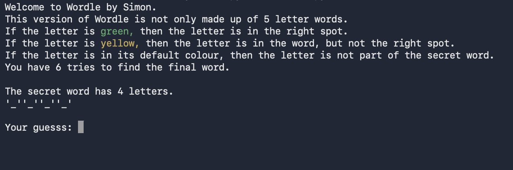

This is a spin off of the widely known wordle by The New York Times Games. Not all words are 5 letters long.
This game still uses the green and yellow colour scheme on each letter. The game instructions are printed
at the top of the script. The essence of this game is to guess the secret word in 6 tries.
The possible word list is expandable, just add whatever word you want in the list.
📥 Download wordle.py

Wordle Preview